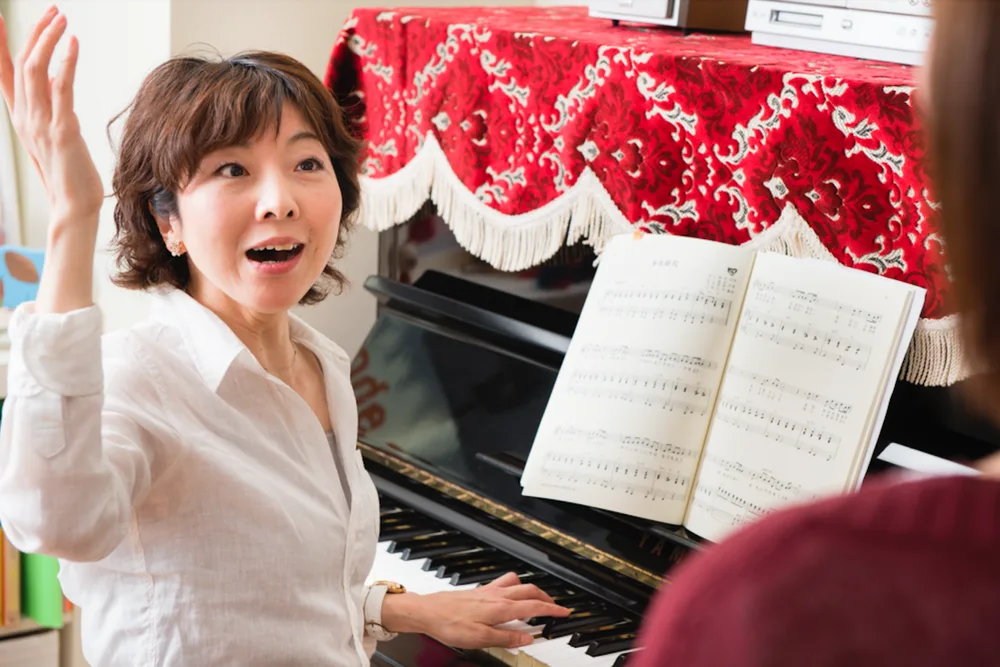
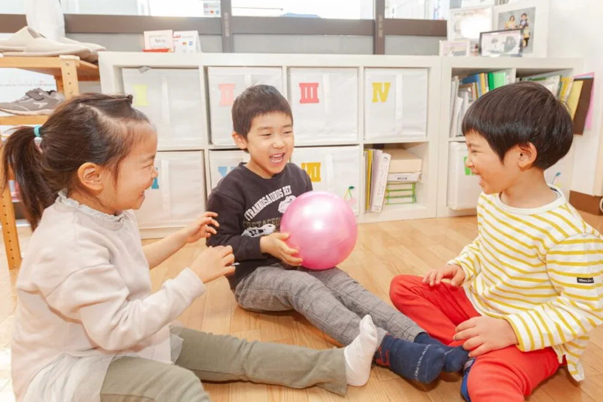
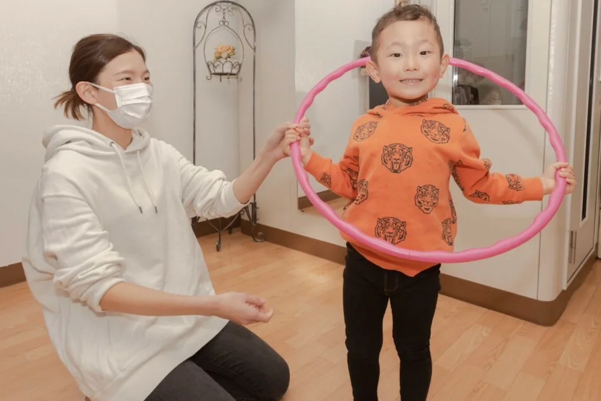

01 / PEOPLE音楽の専門家が、
あなたの「好き」に寄り添う。
演奏活動や指導経験を重ねてきた講師が、一人ひとりの興味と目標に向き合います。


MUSIC, WITH YOUR LIFE.
はじめての習い事から、自分のための時間まで。
年齢と「やってみたい」から選べる、6つの入口。
1〜5歳
親子やお友達と音楽にふれる。
年齢別のクラスをご案内します。

4〜18歳
「弾けた！」を一つずつ。
成長に合わせて丁寧に。
 写真は音楽活動のイメージ
写真は音楽活動のイメージ4〜18歳
歌うよろこびを、自分の声で。
声と表現する力を育てます。

18歳〜
はじめてでも、久しぶりでも。
憧れの一曲をあなたのペースで。
写真は歌のレッスンのイメージ18歳〜
好きな歌を、気持ちよく。
目的に合わせた声のレッスン。

音高・音大・資格取得
ピアノ・うた・ソルフェージュ。
目標に向けて基礎から学ぶ。
グループレッスンのクラスカラー
各コースの内容・料金を見ながら、自分に合うレッスンを探せます。
小さな「できた！」を一緒によろこぶ。
好きな曲に挑戦する時間を、そっと支える。
モードプラスは、子どもから大人まで、一人ひとりの心に寄り添うピアノとうたの音楽教室です。
※2026年9月時点

演奏活動や指導経験を重ねてきた講師が、一人ひとりの興味と目標に向き合います。

親子でふれる音やリズム、じっくり取り組む個人レッスン。年齢や目的に合う学び方を大切にしています。

グランドピアノの響きを身近に感じながら、清澄白河・住吉の教室で音楽のある毎日を育みます。
清澄白河と住吉。
あなたの暮らしに近い教室へ。
